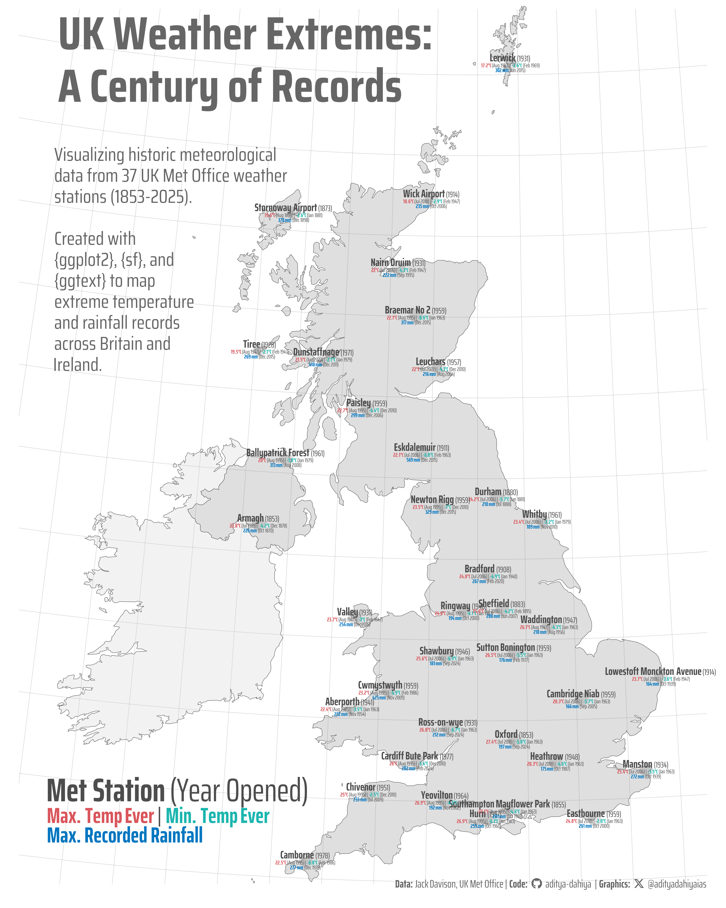

Mapping extreme weather across the UK using Met Office data (1853-2025): {ggrepel} with richly formatted text on maps in R
#TidyTuesday
{ggrepel}
Maps
Repel richtext
{marquee}
{ggtext}
Author
Aditya Dahiya
Published
October 21, 2025
About the Data
This dataset features historic meteorological data from 37 weather stations across the United Kingdom, curated from the UK Met Office‘s historic station data collection. The Met Office, established in 1854 as one of the world’s oldest weather services, serves as the UK’s national weather and climate authority. The dataset includes monthly measurements spanning from as early as 1853 to the present, tracking key variables such as maximum and minimum temperatures, air frost days, rainfall, and sunshine duration. Each station’s metadata provides geographic coordinates in EPSG:4326 format and opening dates. The data undergoes basic cleaning with estimated data flags and historical monitoring technique variations removed for simplicity, though these details remain available in the raw source data. Station files are updated monthly, approximately 10 days after month-end, with measurements reflecting the stations’ operational history without adjustments for site changes or instrumentation developments over time. This comprehensive dataset was curated by Jack Davison for the #TidyTuesday project.

Figure 1: Geographic distribution of UK Met Office weather stations with their record-breaking measurements. Each station marker is labeled with its most extreme climate events: maximum temperature (red), minimum temperature (blue), and highest monthly rainfall (green). Dates in parentheses indicate when these records were set. Station opening years range from 1853 to recent decades, representing one of the most comprehensive historic meteorological datasets in the world and documenting Britain’s climate variability across generations.
How I Made This Graphic
Loading required libraries
Code
pacman::p_load( tidyverse, # All things tidy scales, # Nice Scales for ggplot2 fontawesome, # Icons display in ggplot2 ggtext, # Markdown text support for ggplot2 showtext, # Display fonts in ggplot2 colorspace, # Lighten and Darken colours sf, # for maps patchwork # Composing Plots)pacman::p_load( sf, ggrepel, ggtext, grid, gridtext)historic_station_met <- readr::read_csv('https://raw.githubusercontent.com/rfordatascience/tidytuesday/main/data/2025/2025-10-21/historic_station_met.csv') |> janitor::clean_names()station_meta <- readr::read_csv('https://raw.githubusercontent.com/rfordatascience/tidytuesday/main/data/2025/2025-10-21/station_meta.csv') |> janitor::clean_names()
Visualization Parameters
Code
# Font for titlesfont_add_google("Saira",family ="title_font")# Font for the captionfont_add_google("Saira Condensed",family ="body_font")# Font for plot textfont_add_google("Saira Extra Condensed",family ="caption_font")showtext_auto()# A base Colourbg_col <-"white"seecolor::print_color(bg_col)# Colour for highlighted texttext_hil <-"grey40"seecolor::print_color(text_hil)# Colour for the texttext_col <-"grey30"seecolor::print_color(text_col)line_col <-"grey30"# Define Base Text Sizebts <-180# Get the actual colors from chosen paletteday_colors <- paletteer::paletteer_d("ghibli::PonyoDark", n =7)names(day_colors) <-c("Sun", "Mon", "Tue", "Wed", "Thu", "Fri", "Sat")# Caption stuff for the plotsysfonts::font_add(family ="Font Awesome 6 Brands",regular = here::here("docs", "Font Awesome 6 Brands-Regular-400.otf"))github <-""github_username <-"aditya-dahiya"xtwitter <-""xtwitter_username <-"@adityadahiyaias"social_caption_1 <- glue::glue("<span style='font-family:\"Font Awesome 6 Brands\";'>{github};</span> <span style='color: {text_hil}'>{github_username} </span>")social_caption_2 <- glue::glue("<span style='font-family:\"Font Awesome 6 Brands\";'>{xtwitter};</span> <span style='color: {text_hil}'>{xtwitter_username}</span>")plot_caption <-paste0("**Data:** Jack Davison, UK Met Office"," | **Code:** ", social_caption_1," | **Graphics:** ", social_caption_2)rm( github, github_username, xtwitter, xtwitter_username, social_caption_1, social_caption_2)# Add text to plot-------------------------------------------------plot_title <-"UK Weather Extremes:\nA Century of Records"plot_subtitle <-"Visualizing historic meteorological\ndata from 37 UK Met Office weather\nstations (1853-2025).\n\nCreated with\n{ggplot2}, {sf}, and\n{ggtext} to map\nextreme temperature\nand rainfall records\nacross Britain and\nIreland."str_view(plot_subtitle)
# Saving a thumbnaillibrary(magick)# Saving a thumbnail for the webpageimage_read(here::here("data_vizs","tidy_uk_meteorological_data2.png")) |>image_resize(geometry ="x400") |>image_write( here::here("data_vizs","thumbnails","tidy_uk_meteorological_data.png" ) )
Table 1: R Packages and their versions used in the creation of this page and graphics
Attempt 2: Add custom functions
This code defines geom_marquee_repel(), a specialized ggplot2 geom that combines rich text rendering capabilities from the marquee package with intelligent label positioning from ggrepel. The implementation follows a similar architecture to geom_label_repel() but replaces standard text grobs with marquee’s formatted text grobs, allowing users to create plots with richly styled, non-overlapping labels that include features like bold text, colors, and other formatting options. The geom uses the same repulsion algorithm to automatically adjust label positions, preventing overlaps between labels and data points while respecting plot boundaries and user-defined constraints. Source:ggrepel R directoryCredits:teunbrand
Code
#' Name ggplot grid object#' Convenience function to name grid objects#'#' @noRdggname <-function(prefix, grob) { grob$name <-grobName(grob, prefix) grob}with_seed_null <-function(seed, code) {if (is.null(seed)) { code } else { withr::with_seed(seed, code) }}.pt <-72.27/25.4"%||%"<-function(a, b) {if (!is.null(a)) a else b}#' Return a boolean vector of non-empty items.#'#' @param xs Vector with a mix of "expression" items, "character" items,#' and items from other classes.#' @return Boolean vector indicating which items are not empty.#' @noRdnot_empty <-function(xs) {sapply(seq_along(xs), function(i) {if (is.expression(xs[i])) {return(length(nchar(xs[i])) >0) } else {return(xs[i] !="") } })}#' Return a unit version of the argument.#'#' @param x Number or unit object.#' @return unit(x, "lines") if number or the unchanged argument if it's already#' a unit object.#' @noRdto_unit <-function(x) {# don't change arg if already unitif (is.unit(x)) {return(x) }# NA used to exclude points from repulsion calculationsif (length(x) ==1&&is.na(x)) {return(NA) }unit(x, "lines")}#' Parse takes a vector of n lines and returns m expressions.#' See https://github.com/tidyverse/ggplot2/issues/2864 for discussion.#'#' parse(text = c("alpha", "", "gamma"))#' #> expression(alpha, gamma)#'#' parse_safe(text = c("alpha", "", "gamma"))#' #> expression(alpha, NA, gamma)#'#' @noRdparse_safe <-function(text) {stopifnot(is.character(text)) out <-vector("expression", length(text))for (i inseq_along(text)) { expr <-parse(text = text[[i]]) out[[i]] <-if (length(expr) ==0) NAelse expr[[1]] } out}#' Exclude data points outside the panel ranges#' @noRdexclude_outside <-function(data, panel_scales) {if ("x.range"%in%names(panel_scales)) { xr <- panel_scales$x.range yr <- panel_scales$y.range ix <-inside(data$x, xr) &inside(data$y, yr) data <- data[ix,,drop=FALSE] } elseif ("x_range"%in%names(panel_scales)) { xr <- panel_scales$x_range yr <- panel_scales$y_range ix <-inside(data$x, xr) &inside(data$y, yr) data <- data[ix,,drop=FALSE] } data}#' Exclude data points outside the panel ranges#' @noRdinside <-function(x, bounds) {is.infinite(x) | (x <= bounds[2] & x >= bounds[1])}#' @rdname geom_text_repel#' @param label.padding Amount of padding around label, as unit or number.#' Defaults to 0.25. (Default unit is lines, but other units can be specified#' by passing \code{unit(x, "units")}).#' @param label.r Radius of rounded corners, as unit or number. Defaults#' to 0.15. (Default unit is lines, but other units can be specified by#' passing \code{unit(x, "units")}).#' @param label.size Size of label border, in mm.#' @exportgeom_label_repel <-function(mapping =NULL, data =NULL, stat ="identity", position ="identity",parse =FALSE, ...,box.padding =0.25,label.padding =0.25,point.padding =1e-6,label.r =0.15,label.size =0.25,min.segment.length =0.5,arrow =NULL,force =1,force_pull =1,max.time =0.5,max.iter =10000,max.overlaps =getOption("ggrepel.max.overlaps", default =10),nudge_x =0,nudge_y =0,xlim =c(NA, NA),ylim =c(NA, NA),na.rm =FALSE,show.legend =NA,direction =c("both","y","x"),seed =NA,verbose =getOption("verbose", default =FALSE),inherit.aes =TRUE) {if (!missing(nudge_x) ||!missing(nudge_y)) {if (!missing(position)) {stop("Specify either `position` or `nudge_x`/`nudge_y`", call. =FALSE) } position <-position_nudge_repel(nudge_x, nudge_y) }# Warn about limitations of the algorithmif (verbose &&any(abs(data$angle %%90) >5)) {message("ggrepel: Repulsion works correctly only for rotation angles multiple of 90 degrees" ) }layer(data = data,mapping = mapping,stat = stat,geom = GeomLabelRepel,position = position,show.legend = show.legend,inherit.aes = inherit.aes,params =list(parse = parse,box.padding =to_unit(box.padding),label.padding =to_unit(label.padding),point.padding =to_unit(point.padding),label.r =to_unit(label.r),label.size = label.size,min.segment.length =to_unit(min.segment.length),arrow = arrow,na.rm = na.rm,force = force,force_pull = force_pull,max.time = max.time,max.iter = max.iter,max.overlaps = max.overlaps,nudge_x = nudge_x,nudge_y = nudge_y,xlim = xlim,ylim = ylim,direction =match.arg(direction),seed = seed,verbose = verbose, ... ) )}#' GeomLabelRepel#' @rdname ggrepel#' @format NULL#' @usage NULL#' @seealso \link[ggplot2]{GeomLabel} from the ggplot2 package.#' @keywords internal#' @exportGeomLabelRepel <-ggproto("GeomLabelRepel", Geom,required_aes =c("x", "y", "label"),default_aes =aes(colour ="black", fill ="white", size =3.88, angle =0,alpha =NA, family ="", fontface =1, lineheight =1.2,hjust =0.5, vjust =0.5, point.size =1,segment.linetype =1, segment.colour =NULL, segment.size =0.5, segment.alpha =NULL,segment.curvature =0, segment.angle =90, segment.ncp =1,segment.shape =0.5, segment.square =TRUE, segment.squareShape =1,segment.inflect =FALSE, segment.debug =FALSE ),draw_panel =function( data, panel_scales, coord,parse =FALSE,na.rm =FALSE,box.padding =0.25,label.padding =0.25,point.padding =1e-6,label.r =0.15,label.size =0.25,min.segment.length =0.5,arrow =NULL,force =1,force_pull =1,max.time =0.5,max.iter =10000,max.overlaps =10,nudge_x =0,nudge_y =0,xlim =c(NA, NA),ylim =c(NA, NA),direction ="both",seed =NA,verbose =getOption("verbose", default =FALSE) ) {if (parse) { data$label <-parse_safe(as.character(data$label)) }if (!length(data$label) ||!length(which(not_empty(data$label)))) {return() }# if needed rename columns using our conventionfor (this_dim inc("x", "y")) { this_orig <-sprintf("%s_orig", this_dim) this_nudge <-sprintf("nudge_%s", this_dim)if (!this_nudge %in%colnames(data)) { data[[this_nudge]] <- data[[this_dim]]if (this_orig %in%colnames(data)) { data[[this_dim]] <- data[[this_orig]] data[[this_orig]] <-NULL } } }# Transform the nudges to the panel scales. nudges <-data.frame(x = data$nudge_x, y = data$nudge_y) nudges <- coord$transform(nudges, panel_scales)# Transform the raw data to the panel scales. data <- coord$transform(data, panel_scales)# The nudge is relative to the data. data$nudge_x <- nudges$x - data$x data$nudge_y <- nudges$y - data$y# Transform limits to panel scales. limits <-data.frame(x = xlim, y = ylim) limits <- coord$transform(limits, panel_scales)# Allow Inf.if (length(limits$x) ==length(xlim)) { limits$x[is.infinite(xlim)] <- xlim[is.infinite(xlim)] }if (length(limits$y) ==length(ylim)) { limits$y[is.infinite(ylim)] <- ylim[is.infinite(ylim)] }# Fill NAs with defaults. limits$x[is.na(limits$x)] <-c(0, 1)[is.na(limits$x)] limits$y[is.na(limits$y)] <-c(0, 1)[is.na(limits$y)]# Convert hjust and vjust to numeric if characterif (is.character(data$vjust)) { data$vjust <-compute_just(data$vjust, data$y) }if (is.character(data$hjust)) { data$hjust <-compute_just(data$hjust, data$x) }ggname("geom_label_repel", gTree(limits = limits,data = data,lab = data$label,box.padding =to_unit(box.padding),label.padding =to_unit(label.padding),point.padding =to_unit(point.padding),label.r =to_unit(label.r),label.size = label.size,min.segment.length =to_unit(min.segment.length),arrow = arrow,force = force,force_pull = force_pull,max.time = max.time,max.iter = max.iter,max.overlaps = max.overlaps,direction = direction,seed = seed,verbose = verbose,cl ="labelrepeltree" )) },draw_key = draw_key_label)#' grid::makeContent function for the grobTree of textRepelGrob objects#' @param x A grid grobTree.#' @export#' @noRdmakeContent.labelrepeltree <-function(x) {# The padding around each bounding box. box_padding_x <-convertWidth(x$box.padding, "npc", valueOnly =TRUE) box_padding_y <-convertHeight(x$box.padding, "npc", valueOnly =TRUE)# The padding around each point.if (is.na(x$point.padding)) { x$point.padding =unit(0, "lines") }# Do not create text labels for empty strings. valid_strings <-which(not_empty(x$lab)) invalid_strings <-which(!not_empty(x$lab)) ix <-c(valid_strings, invalid_strings) x$data <- x$data[ix,] x$lab <- x$lab[ix]# Create a dataframe with x1 y1 x2 y2 boxes <-lapply(seq_along(valid_strings), function(i) { row <- x$data[i, , drop =FALSE] t <-textGrob( x$lab[i],unit(row$x, "native") + x$label.padding,unit(row$y, "native") + x$label.padding,gp =gpar(fontsize = row$size * .pt,fontfamily = row$family,fontface = row$fontface,lineheight = row$lineheight ),name ="text" ) r <-roundrectGrob( row$x, row$y, default.units ="native",width =grobWidth(t) +2* x$label.padding,height =grobHeight(t) +2* x$label.padding,r = x$label.r,gp =gpar(lwd = x$label.size * .pt),name ="box" ) gw <-convertWidth(grobWidth(r), "native", TRUE) gh <-convertHeight(grobHeight(r), "native", TRUE)c("x1"= row$x - gw * row$hjust - box_padding_x + row$nudge_x,"y1"= row$y - gh * row$vjust - box_padding_y + row$nudge_y,"x2"= row$x + gw * (1- row$hjust) + box_padding_x + row$nudge_x,"y2"= row$y + gh * (1- row$vjust) + box_padding_y + row$nudge_y ) })# Make the repulsion reproducible if desired.if (!is.null(x$seed) &&is.na(x$seed)) { x$seed <-sample.int(.Machine$integer.max, 1L) }# The points are represented by circles. x$data$point.size[is.na(x$data$point.size)] <-0# Beware the magic numbers. I do not understand them.# I just accept them as necessary to get the code to work. p_width <-convertWidth(unit(1, "npc"), "inch", TRUE) p_height <-convertHeight(unit(1, "npc"), "inch", TRUE) p_ratio <- (p_width / p_height)if (p_ratio >1) { p_ratio <- p_ratio ^ (1/ (1.15* p_ratio)) } point_size <- p_ratio *convertWidth(to_unit(x$data$point.size), "native", valueOnly =TRUE ) /13 point_padding <- p_ratio *convertWidth(to_unit(x$point.padding), "native", valueOnly =TRUE ) /13# Repel overlapping bounding boxes away from each other. repel <-with_seed_null(x$seed, repel_boxes2(data_points =as.matrix(x$data[,c("x","y")]),point_size = point_size,point_padding_x = point_padding,point_padding_y = point_padding,boxes =do.call(rbind, boxes),xlim =range(x$limits$x),ylim =range(x$limits$y),hjust = x$data$hjust %||%0.5,vjust = x$data$vjust %||%0.5,force_push = x$force *1e-6,force_pull = x$force_pull *1e-2,max_time = x$max.time,max_iter =ifelse(is.infinite(x$max.iter), 1e9, x$max.iter),max_overlaps = x$max.overlaps,direction = x$direction,verbose = x$verbose ))if (x$verbose &&any(repel$too_many_overlaps)) {message(sprintf("ggrepel: %s unlabeled data points (too many overlaps). Consider increasing 'max.overlaps'",sum(repel$too_many_overlaps) ) ) }if (all(repel$too_many_overlaps)) { grobs <-list()class(grobs) <-"gList"return(setChildren(x, grobs)) } grobs <-lapply(seq_along(valid_strings), function(i) {if (!repel$too_many_overlaps[i]) { row <- x$data[i, , drop =FALSE]makeLabelRepelGrobs( i, x$lab[i],# Position of text bounding boxes.x =unit(repel$x[i], "native"),y =unit(repel$y[i], "native"),# Position of original data points.x.orig = row$x,y.orig = row$y,# Width and height of text boxes.box.width = boxes[[i]]["x2"] - boxes[[i]]["x1"],box.height = boxes[[i]]["y2"] - boxes[[i]]["y1"],box.padding = x$box.padding,label.padding = x$label.padding,point.size = point_size[i],point.padding = x$point.padding,segment.curvature = row$segment.curvature,segment.angle = row$segment.angle,segment.ncp = row$segment.ncp,segment.shape = row$segment.shape,segment.square = row$segment.square,segment.squareShape = row$segment.squareShape,segment.inflect = row$segment.inflect,segment.debug = row$segment.debug,r = x$label.r,text.gp =gpar(col = scales::alpha(row$colour, row$alpha),fontsize = row$size * .pt,fontfamily = row$family,fontface = row$fontface,lineheight = row$lineheight ),rect.gp =gpar(col = scales::alpha(row$colour, row$alpha),fill = scales::alpha(row$fill, row$alpha),lwd = x$label.size * .pt ),segment.gp =gpar(col = scales::alpha(row$segment.colour %||% row$colour, row$segment.alpha %||% row$alpha),lwd = row$segment.size * .pt,lty = row$segment.linetype %||%1 ),arrow = x$arrow,min.segment.length = x$min.segment.length,hjust = row$hjust,vjust = row$vjust ) } })# Put segment grobs before text grobs, rect grobs before text grobs. grobs <-c(Filter(Negate(is.null), lapply(grobs, "[[", "segment")),unlist(Filter(Negate(is.null), lapply(grobs, "[[", "textbox")),recursive =FALSE, use.names =FALSE ) )class(grobs) <-"gList"setChildren(x, grobs)}makeLabelRepelGrobs <-function( i, label,x =unit(0.5, "npc"),y =unit(0.5, "npc"),# Position of original data points.x.orig =0.5,y.orig =0.5,# Width and height of text boxes.box.width =0,box.height =0,default.units ="npc",box.padding =0.25,label.padding =0.25,point.size =1,point.padding =1e-6,segment.curvature =0,segment.angle =90,segment.ncp =1,segment.shape =0.5,segment.square =TRUE,segment.squareShape =1,segment.inflect =FALSE,segment.debug =FALSE,name =NULL,text.gp =gpar(),rect.gp =gpar(fill ="white"),r =unit(0.1, "snpc"),segment.gp =gpar(),vp =NULL,arrow =NULL,min.segment.length =0.5,hjust =0.5,vjust =0.5) {stopifnot(length(label) ==1)if (!is.unit(x)) x <-unit(x, default.units)if (!is.unit(y)) y <-unit(y, default.units)if (!is.unit(box.width)) box.width <-unit(box.width, default.units)if (!is.unit(box.height)) box.height <-unit(box.height, default.units) t <-textGrob( label, x - box.width * (0.5- hjust), y - box.height * (0.5- vjust),hjust = hjust,vjust = vjust,gp = text.gp,name =sprintf("textrepelgrob%s", i) ) r <-roundrectGrob( x - box.width * (0.5- hjust) - label.padding * (0.5- hjust), y - box.height * (0.5- vjust) - label.padding * (0.5- vjust),default.units ="native",width =grobWidth(t) +2* label.padding,height =grobHeight(t) +2* label.padding,just =c(hjust, vjust),r = r,gp = rect.gp,name =sprintf("rectrepelgrob%s", i) ) x1 <-convertWidth(x -0.5*grobWidth(r), "native", TRUE) x2 <-convertWidth(x +0.5*grobWidth(r), "native", TRUE) y1 <-convertHeight(y -0.5*grobHeight(r), "native", TRUE) y2 <-convertHeight(y +0.5*grobHeight(r), "native", TRUE) point_pos <-c(x.orig, y.orig)# Get the coordinates of the intersection between the line from the# original data point to the centroid and the rectangle's edges. text_box <-c(x1, y1, x2, y2)#int <- intersect_line_rectangle(point_pos, center, c(x1, y1, x2, y2)) int <-select_line_connection(point_pos, text_box)# Check if the data point is inside the label box. point_inside_text <-FALSEif (text_box[1] <= point_pos[1] && point_pos[1] <= text_box[3] && text_box[2] <= point_pos[2] && point_pos[2] <= text_box[4]) { point_inside_text <-TRUE }# This seems just fine. point.padding <-convertWidth(to_unit(point.padding), "native", TRUE) /2 point_int <-intersect_line_circle(int, point_pos, (point.size + point.padding))# Compute the distance between the data point and the edge of the text box. dx <-abs(int[1] - point_pos[1]) dy <-abs(int[2] - point_pos[2]) d <-sqrt(dx * dx + dy * dy)# Scale the unit vector by the minimum segment length.if (d >0) { mx <-convertWidth(min.segment.length, "native", TRUE) my <-convertHeight(min.segment.length, "native", TRUE) min.segment.length <-sqrt((mx * dx / d) ^2+ (my * dy / d) ^2) } grobs <-list(textbox =list(rect = r, text = t))if (!point_inside_text && d >0&&# Distance from label to point edge is greater than minimum. (!is.na(min.segment.length) &&euclid(int, point_int) > min.segment.length) &&# Distance from label to point edge is less than from label to point center.euclid(int, point_int) <euclid(int, point_pos) &&# Distance from label to point center is greater than point size.euclid(int, point_pos) > point.size &&# Distance from label to point center is greater than from point edge to point center.euclid(int, point_pos) >euclid(point_int, point_pos) ) { s <-curveGrob(x1 = int[1],y1 = int[2],x2 = point_int[1],y2 = point_int[2],default.units ="native",curvature = segment.curvature,angle = segment.angle,ncp = segment.ncp,shape = segment.shape,square = segment.square,squareShape = segment.squareShape,inflect = segment.inflect,debug = segment.debug,gp = segment.gp,name =sprintf("segmentrepelgrob%s", i),arrow = arrow ) grobs[["segment"]] <- s } grobs}#' @rdname geom_text_repel#' @exportgeom_marquee_repel <-function(mapping =NULL, data =NULL, stat ="identity", position ="identity", ...,box.padding =0.25, point.padding =1e-6,min.segment.length =0.5,arrow =NULL,force =1,force_pull =1,max.time =0.5,max.iter =10000,max.overlaps =getOption("ggrepel.max.overlaps", default =10),nudge_x =0,nudge_y =0,xlim =c(NA, NA),ylim =c(NA, NA),na.rm =FALSE,show.legend =NA,direction =c("both","y","x"),seed =NA,verbose =getOption("verbose", default =FALSE),inherit.aes =TRUE) { rlang::check_installed("marquee", "for rendering rich text.")if (!missing(nudge_x) ||!missing(nudge_y)) {if (!missing(position)) {stop("Specify either `position` or `nudge_x`/`nudge_y`", call. =FALSE) } position <-position_nudge_repel(nudge_x, nudge_y) }# Warn about limitations of the algorithmif (verbose &&any(abs(data$angle %%90) >5)) {message("ggrepel: Repulsion works correctly only for rotation angles multiple of 90 degrees" ) }layer(data = data,mapping = mapping,stat = stat,geom = GeomMarqueeRepel,position = position,show.legend = show.legend,inherit.aes = inherit.aes,params =list(box.padding =to_unit(box.padding),point.padding =to_unit(point.padding),min.segment.length =to_unit(min.segment.length),arrow = arrow,na.rm = na.rm,force = force,force_pull = force_pull,max.time = max.time,max.iter = max.iter,max.overlaps = max.overlaps,nudge_x = nudge_x,nudge_y = nudge_y,xlim = xlim,ylim = ylim,direction =match.arg(direction),seed = seed,verbose = verbose, ... ) )}#' GeomMarqueeRepel#' @format NULL#' @usage NULL#' @keywords internal#' @exportGeomMarqueeRepel <-ggproto("GeomMarqueeRepel", Geom,required_aes =c("x", "y", "label"),default_aes =aes(colour ="black", fill =NA, size =3.88, angle =0,hjust =0.5, vjust =0.5, alpha =NA, family ="", lineheight =1.2,# marquee specificstyle =NULL, width =NA,# repel specificpoint.size =1, segment.linetype =1, segment.colour =NULL,segment.size =0.5, segment.alpha =NULL, segment.curvature =0,segment.angle =90, segment.ncp =1, segment.shape =0.5,segment.square =TRUE, segment.squareShape =1, segment.inflect =FALSE,segment.debug =FALSE ),draw_panel =function( data, panel_params, coord,# repel specificbox.padding =0.25, point.padding =1e-6,min.segment.length =0.5, arrow =NULL,force =1, force_pull =1,max.time =0.5, max.iter =10000, max.overlaps =10,nudge_x =0, nudge_y =0,xlim =c(NA, NA), ylim =c(NA, NA),direction ="both", seed =NA,verbose =getOption("verbose", default =FALSE) ) {if (!length(data$label) ||!length(which(not_empty(data$label)))) {return() }# Marquee specific processing styles <- data$styleif (is.null(styles)) { default <- marquee::modify_style( marquee::classic_style(), "body",margin = marquee::trbl(marquee::rem(0.1)) ) styles <-rep(default, nrow(data)) }if (!inherits(styles, "marquee_style_set")) {stop("`style` must be a marquee_style_set object.") } styles <- marquee::modify_style(styles,"base",family = data$family,size = data$size * .pt,lineheight = data$lineheight,color =alpha(data$colour, data$alpha) ) styles <- marquee::modify_style(styles,"body",background = marquee::skip_inherit(data$fill), )# ggrepel specific processing# if needed rename columns using our conventionfor (this_dim inc("x", "y")) { this_orig <-sprintf("%s_orig", this_dim) this_nudge <-sprintf("nudge_%s", this_dim)if (!this_nudge %in%colnames(data)) { data[[this_nudge]] <- data[[this_dim]]if (this_orig %in%colnames(data)) { data[[this_dim]] <- data[[this_orig]] data[[this_orig]] <-NULL } } }# Transform the nudges to the panel scales. nudges <-data.frame(x = data$nudge_x, y = data$nudge_y) nudges <- coord$transform(nudges, panel_params)# Transform the raw data to the panel scales. data <- coord$transform(data, panel_params)# The nudge is relative to the data. data$nudge_x <- nudges$x - data$x data$nudge_y <- nudges$y - data$y# Transform limits to panel scales. limits <-data.frame(x = xlim, y = ylim) limits <- coord$transform(limits, panel_params)# Allow Inf.if (length(limits$x) ==length(xlim)) { limits$x[is.infinite(xlim)] <- xlim[is.infinite(xlim)] }if (length(limits$y) ==length(ylim)) { limits$y[is.infinite(ylim)] <- ylim[is.infinite(ylim)] }# Fill NAs with defaults. limits$x[is.na(limits$x)] <-c(0, 1)[is.na(limits$x)] limits$y[is.na(limits$y)] <-c(0, 1)[is.na(limits$y)]# Convert hjust and vjust to numeric if characterif (is.character(data$vjust)) { data$vjust <-compute_just(data$vjust, data$y) }if (is.character(data$hjust)) { data$hjust <-compute_just(data$hjust, data$x) } grobs <-vector("list", nrow(data))for (i inwhich(not_empty(data$label))) { grobs[[i]] <- marquee::marquee_grob(text = data$label[i], style = styles[i], force_body_margin =TRUE,x =0.5, y =0.5, width = data$width[i],hjust =0.5, vjust =0.5,angle = data$angle[i] ) }ggname("geom_marquee_repel", gTree(limits = limits, data = data,grobs = grobs,box.padding =to_unit(box.padding),point.padding =to_unit(point.padding),min.segment.length =to_unit(min.segment.length),arrow = arrow, force = force, force_pull = force_pull,max.time = max.time, max.iter = max.iter, max.overlaps = max.overlaps,direction = direction, seed = seed, verbose = verbose,cl ="marqueerepeltree" )) },draw_key = draw_key_label)#' @exportmakeContent.marqueerepeltree <-function(x) {# The padding around each bounding box. box_padding_x <-convertWidth( x$box.padding, "npc", valueOnly =TRUE) box_padding_y <-convertHeight(x$box.padding, "npc", valueOnly =TRUE)# The padding around each point.if (is.na(x$point.padding)) { x$point.padding =unit(0, "lines") } valid_strings <-which(lengths(x$grobs) >0) invalid_strings <-which(lengths(x$grobs) <1) ord <-c(valid_strings, invalid_strings) x$data <- x$data[ord, , drop =FALSE] x$grobs <- x$grobs[ord] justification <-rotate_just(x$data$angle, x$data$hjust, x$data$vjust) hjust <- justification$hjust vjust <- justification$vjust boxes <-lapply(seq_along(valid_strings), function(i) { row <- x$data[i, , drop =FALSE] grob <- x$grobs[[i]] gw <-convertWidth( grobWidth(grob), "native", TRUE) gh <-convertHeight(grobHeight(grob), "native", TRUE)c("x1"= row$x - gw * hjust[i] - box_padding_x + row$nudge_x,"y1"= row$y - gh * vjust[i] - box_padding_y + row$nudge_y,"x2"= row$x + gw * (1- hjust[i]) + box_padding_x + row$nudge_x,"y2"= row$y + gh * (1- vjust[i]) + box_padding_y + row$nudge_y ) })# Make the repulsion reproducible if desired.if (!is.null(x$seed) &&is.na(x$seed)) { x$seed <-sample.int(.Machine$integer.max, 1L) }# The points are represented by circles. x$data$point.size[is.na(x$data$point.size)] <-0# Beware the magic numbers. I do not understand them.# I just accept them as necessary to get the code to work. p_width <-convertWidth(unit(1, "npc"), "inch", TRUE) p_height <-convertHeight(unit(1, "npc"), "inch", TRUE) p_ratio <- (p_width / p_height)if (p_ratio >1) { p_ratio <- p_ratio ^ (1/ (1.15* p_ratio)) } point_size <- p_ratio *convertWidth(to_unit(x$data$point.size), "native", valueOnly =TRUE ) /13 point_padding <- p_ratio *convertWidth(to_unit(x$point.padding), "native", valueOnly =TRUE ) /13# Repel overlapping bounding boxes away from each other. repel <-with_seed_null(x$seed, repel_boxes2(data_points =as.matrix(x$data[,c("x","y")]),point_size = point_size,point_padding_x = point_padding,point_padding_y = point_padding,boxes =do.call(rbind, boxes),xlim =range(x$limits$x),ylim =range(x$limits$y),hjust = x$data$hjust %||%0.5,vjust = x$data$vjust %||%0.5,force_push = x$force *1e-6,force_pull = x$force_pull *1e-2,max_time = x$max.time,max_iter =ifelse(is.infinite(x$max.iter), 1e9, x$max.iter),max_overlaps = x$max.overlaps,direction = x$direction,verbose = x$verbose ))if (x$verbose &&any(repel$too_many_overlaps)) {message(sprintf("ggrepel: %s unlabeled data points (too many overlaps). Consider increasing 'max.overlaps'",sum(repel$too_many_overlaps) ) ) }if (all(repel$too_many_overlaps)) { grobs <-list()class(grobs) <-"gList"return(setChildren(x, grobs)) } width <-convertWidth(unit(1, "npc"), "cm", valueOnly =TRUE) height <-convertHeight(unit(1, "npc"), "cm", valueOnly =TRUE) point_size <- x$data$point.size * .pt / .stroke /20 point_padding <-convertWidth(to_unit(x$point.padding), "cm", TRUE) grobs <-lapply(seq_along(valid_strings), function(i) {if (!repel$too_many_overlaps[i]) { row <- x$data[i, , drop =FALSE]makeMarqueeRepelGrobs( i, x$grobs[[i]],# Position of text bounding boxes.x =unit(repel$x[i], "native"),y =unit(repel$y[i], "native"),# Position of original data points.x.orig = row$x,y.orig = row$y,# Width and height of text boxes.box.width = boxes[[i]]["x2"] - boxes[[i]]["x1"],box.height = boxes[[i]]["y2"] - boxes[[i]]["y1"],box.padding = x$box.padding,point.size = point_size[i],point.padding = point_padding,segment.curvature = row$segment.curvature,segment.angle = row$segment.angle,segment.ncp = row$segment.ncp,segment.shape = row$segment.shape,segment.square = row$segment.square,segment.squareShape = row$segment.squareShape,segment.inflect = row$segment.inflect,segment.debug = row$segment.debug,segment.gp =gpar(col = scales::alpha(row$segment.colour %||% row$colour, row$segment.alpha %||% row$alpha),lwd = row$segment.size * .pt,lty = row$segment.linetype %||%1 ),arrow = x$arrow,min.segment.length = x$min.segment.length,hjust = row$hjust,vjust = row$vjust,dim =c(width, height) ) } }) grobs <-unlist(grobs, recursive =FALSE)class(grobs) <-"gList"setChildren(x, grobs)}makeMarqueeRepelGrobs <-function( i, label,x =unit(0.5, "npc"),y =unit(0.5, "npc"),# Position of original data points.x.orig =0.5,y.orig =0.5,# Width and height of text boxes.box.width =0,box.height =0,default.units ="npc",box.padding =0.25,point.size =1,point.padding =1e-6,segment.curvature =0,segment.angle =90,segment.ncp =1,segment.shape =0.5,segment.square =TRUE,segment.squareShape =1,segment.inflect =FALSE,segment.debug =FALSE,name =NULL,segment.gp =gpar(),vp =NULL,arrow =NULL,min.segment.length =0.5,hjust =0.5,vjust =0.5,dim =c(5, 5)) {if (!is.unit(x)) x <-unit(x, default.units)if (!is.unit(y)) y <-unit(y, default.units)if (!is.unit(box.width)) box.width <-unit(box.width, default.units)if (!is.unit(box.height)) box.height <-unit(box.height, default.units)# browser() label <- grid::editGrob(label, x = x, y = y) x1 <-convertWidth(x -0.5*grobWidth(label), "native", TRUE) x2 <-convertWidth(x +0.5*grobWidth(label), "native", TRUE) y1 <-convertHeight(y -0.5*grobHeight(label), "native", TRUE) y2 <-convertHeight(y +0.5*grobHeight(label), "native", TRUE) point_pos <-c(x.orig, y.orig)# Get the coordinates of the intersection between the line from the# original data point to the centroid and the rectangle's edges. text_box <-c(x1, y1, x2, y2)#int <- intersect_line_rectangle(point_pos, center, c(x1, y1, x2, y2)) int <-select_line_connection(point_pos, text_box)# Check if the data point is inside the label box. point_inside_text <-FALSEif (text_box[1] <= point_pos[1] && point_pos[1] <= text_box[3] && text_box[2] <= point_pos[2] && point_pos[2] <= text_box[4]) { point_inside_text <-TRUE }# This seems just fine. point.padding <-convertWidth(to_unit(point.padding), "native", TRUE) /2 point_int <-intersect_line_circle(int * dim, point_pos * dim, (point.size + point.padding)) point_int <- point_int / dim# Compute the distance between the data point and the edge of the text box. dx <-abs(int[1] - point_pos[1]) dy <-abs(int[2] - point_pos[2]) d <-sqrt(dx * dx + dy * dy)# Scale the unit vector by the minimum segment length.if (d >0) { mx <-convertWidth(min.segment.length, "native", TRUE) my <-convertHeight(min.segment.length, "native", TRUE) min.segment.length <-sqrt((mx * dx / d) ^2+ (my * dy / d) ^2) } grobs <-list(textbox = label)if (!point_inside_text && d >0&&# Distance from label to point edge is greater than minimum. (!is.na(min.segment.length) &&euclid(int, point_int) > min.segment.length) &&# Distance from label to point edge is less than from label to point center.euclid(int, point_int) <euclid(int, point_pos) &&# Distance from label to point center is greater than point size.euclid(int * dim, point_pos * dim) > point.size &&# Distance from label to point center is greater than from point edge to point center.euclid(int, point_pos) >euclid(point_int, point_pos) ) { s <-curveGrob(x1 = int[1],y1 = int[2],x2 = point_int[1],y2 = point_int[2],default.units ="native",curvature = segment.curvature,angle = segment.angle,ncp = segment.ncp,shape = segment.shape,square = segment.square,squareShape = segment.squareShape,inflect = segment.inflect,debug = segment.debug,gp = segment.gp,name =sprintf("segmentrepelgrob%s", i),arrow = arrow ) grobs[["segment"]] <- s } grobs}# similar to ggplot2:::rotate_justrotate_just <-function(angle =NULL, hjust =NULL, vjust =NULL) { angle <- (angle %||%0) %%360if (is.character(hjust)) { hjust <-match(hjust, c("left", "right")) -1 hjust[is.na(hjust)] <-0.5 }if (is.character(vjust)) { vjust <-match(vjust, c("bottom", "top")) -1 vjust[is.na(vjust)] <-0.5 } size <-max(length(angle), length(hjust), length(vjust)) angle <-rep(angle, length.out = size) hjust <-rep(hjust, length.out = size) vjust <-rep(vjust, length.out = size) case <-findInterval(angle, c(0, 90, 180, 270, 360)) hnew <- hjust vnew <- vjust is_case <-which(case ==2) # 90 <= x < 180 hnew[is_case] <-1- vjust[is_case] vnew[is_case] <- hjust[is_case] is_case <-which(case ==3) # 180 <= x < 270 hnew[is_case] <-1- hjust[is_case] vnew[is_case] <-1- vjust[is_case] is_case <-which(case ==4) # 270 <= x < 360 hnew[is_case] <- vjust[is_case] vnew[is_case] <-1- hjust[is_case]list(hjust = hnew, vjust = vnew)}GeomMarqueeRepel <-ggproto("GeomMarqueeRepel", Geom,required_aes =c("x", "y", "label"),default_aes =aes(colour ="black", fill =NA, size =3.88, angle =0,hjust =0.5, vjust =0.5, alpha =NA, family ="", lineheight =1.2,# marquee specificstyle =NULL, width =NA,# repel specificpoint.size =1, segment.linetype =1, segment.colour =NULL,segment.size =0.5, segment.alpha =NULL, segment.curvature =0,segment.angle =90, segment.ncp =1, segment.shape =0.5,segment.square =TRUE, segment.squareShape =1, segment.inflect =FALSE,segment.debug =FALSE ),draw_panel =function( data, panel_params, coord,# repel specificbox.padding =0.25, point.padding =1e-6,min.segment.length =0.5, arrow =NULL,force =1, force_pull =1,max.time =0.5, max.iter =10000, max.overlaps =10,nudge_x =0, nudge_y =0,xlim =c(NA, NA), ylim =c(NA, NA),direction ="both", seed =NA,verbose =getOption("verbose", default =FALSE) ) {if (!length(data$label) ||!length(which(not_empty(data$label)))) {return() }# Marquee specific processing styles <- data$styleif (is.null(styles)) { default <- marquee::modify_style( marquee::classic_style(), "body",margin = marquee::trbl(marquee::rem(0.1)) ) styles <-rep(default, nrow(data)) }if (!inherits(styles, "marquee_style_set")) {stop("`style` must be a marquee_style_set object.") } styles <- marquee::modify_style(styles,"base",family = data$family,size = data$size * .pt,lineheight = data$lineheight,color =alpha(data$colour, data$alpha) ) styles <- marquee::modify_style(styles,"body",background = marquee::skip_inherit(data$fill), )# ggrepel specific processing# if needed rename columns using our conventionfor (this_dim inc("x", "y")) { this_orig <-sprintf("%s_orig", this_dim) this_nudge <-sprintf("nudge_%s", this_dim)if (!this_nudge %in%colnames(data)) { data[[this_nudge]] <- data[[this_dim]]if (this_orig %in%colnames(data)) { data[[this_dim]] <- data[[this_orig]] data[[this_orig]] <-NULL } } }# Transform the nudges to the panel scales. nudges <-data.frame(x = data$nudge_x, y = data$nudge_y) nudges <- coord$transform(nudges, panel_params)# Transform the raw data to the panel scales. data <- coord$transform(data, panel_params)# The nudge is relative to the data. data$nudge_x <- nudges$x - data$x data$nudge_y <- nudges$y - data$y# Transform limits to panel scales. limits <-data.frame(x = xlim, y = ylim) limits <- coord$transform(limits, panel_params)# Allow Inf.if (length(limits$x) ==length(xlim)) { limits$x[is.infinite(xlim)] <- xlim[is.infinite(xlim)] }if (length(limits$y) ==length(ylim)) { limits$y[is.infinite(ylim)] <- ylim[is.infinite(ylim)] }# Fill NAs with defaults. limits$x[is.na(limits$x)] <-c(0, 1)[is.na(limits$x)] limits$y[is.na(limits$y)] <-c(0, 1)[is.na(limits$y)]# Convert hjust and vjust to numeric if characterif (is.character(data$vjust)) { data$vjust <-compute_just(data$vjust, data$y) }if (is.character(data$hjust)) { data$hjust <-compute_just(data$hjust, data$x) } grobs <-vector("list", nrow(data))for (i inwhich(not_empty(data$label))) { grobs[[i]] <- marquee::marquee_grob(text = data$label[i], style = styles[i], force_body_margin =TRUE,x =0.5, y =0.5, width = data$width[i],hjust =0.5, vjust =0.5,angle = data$angle[i] ) }ggname("geom_marquee_repel", gTree(limits = limits, data = data,grobs = grobs,box.padding =to_unit(box.padding),point.padding =to_unit(point.padding),min.segment.length =to_unit(min.segment.length),arrow = arrow, force = force, force_pull = force_pull,max.time = max.time, max.iter = max.iter, max.overlaps = max.overlaps,direction = direction, seed = seed, verbose = verbose,cl ="marqueerepeltree" )) },draw_key = draw_key_label)#' @exportmakeContent.marqueerepeltree <-function(x) {# The padding around each bounding box. box_padding_x <-convertWidth( x$box.padding, "npc", valueOnly =TRUE) box_padding_y <-convertHeight(x$box.padding, "npc", valueOnly =TRUE)# The padding around each point.if (is.na(x$point.padding)) { x$point.padding =unit(0, "lines") } valid_strings <-which(lengths(x$grobs) >0) invalid_strings <-which(lengths(x$grobs) <1) ord <-c(valid_strings, invalid_strings) x$data <- x$data[ord, , drop =FALSE] x$grobs <- x$grobs[ord] justification <-rotate_just(x$data$angle, x$data$hjust, x$data$vjust) hjust <- justification$hjust vjust <- justification$vjust boxes <-lapply(seq_along(valid_strings), function(i) { row <- x$data[i, , drop =FALSE] grob <- x$grobs[[i]] gw <-convertWidth( grobWidth(grob), "native", TRUE) gh <-convertHeight(grobHeight(grob), "native", TRUE)c("x1"= row$x - gw * hjust[i] - box_padding_x + row$nudge_x,"y1"= row$y - gh * vjust[i] - box_padding_y + row$nudge_y,"x2"= row$x + gw * (1- hjust[i]) + box_padding_x + row$nudge_x,"y2"= row$y + gh * (1- vjust[i]) + box_padding_y + row$nudge_y ) })# Make the repulsion reproducible if desired.if (!is.null(x$seed) &&is.na(x$seed)) { x$seed <-sample.int(.Machine$integer.max, 1L) }# The points are represented by circles. x$data$point.size[is.na(x$data$point.size)] <-0# Beware the magic numbers. I do not understand them.# I just accept them as necessary to get the code to work. p_width <-convertWidth(unit(1, "npc"), "inch", TRUE) p_height <-convertHeight(unit(1, "npc"), "inch", TRUE) p_ratio <- (p_width / p_height)if (p_ratio >1) { p_ratio <- p_ratio ^ (1/ (1.15* p_ratio)) } point_size <- p_ratio *convertWidth(to_unit(x$data$point.size), "native", valueOnly =TRUE ) /13 point_padding <- p_ratio *convertWidth(to_unit(x$point.padding), "native", valueOnly =TRUE ) /13# Repel overlapping bounding boxes away from each other. repel <-with_seed_null(x$seed, repel_boxes2(data_points =as.matrix(x$data[,c("x","y")]),point_size = point_size,point_padding_x = point_padding,point_padding_y = point_padding,boxes =do.call(rbind, boxes),xlim =range(x$limits$x),ylim =range(x$limits$y),hjust = x$data$hjust %||%0.5,vjust = x$data$vjust %||%0.5,force_push = x$force *1e-6,force_pull = x$force_pull *1e-2,max_time = x$max.time,max_iter =ifelse(is.infinite(x$max.iter), 1e9, x$max.iter),max_overlaps = x$max.overlaps,direction = x$direction,verbose = x$verbose ))if (x$verbose &&any(repel$too_many_overlaps)) {message(sprintf("ggrepel: %s unlabeled data points (too many overlaps). Consider increasing 'max.overlaps'",sum(repel$too_many_overlaps) ) ) }if (all(repel$too_many_overlaps)) { grobs <-list()class(grobs) <-"gList"return(setChildren(x, grobs)) } width <-convertWidth(unit(1, "npc"), "cm", valueOnly =TRUE) height <-convertHeight(unit(1, "npc"), "cm", valueOnly =TRUE) point_size <- x$data$point.size * .pt / .stroke /20 point_padding <-convertWidth(to_unit(x$point.padding), "cm", TRUE) grobs <-lapply(seq_along(valid_strings), function(i) {if (!repel$too_many_overlaps[i]) { row <- x$data[i, , drop =FALSE]makeMarqueeRepelGrobs( i, x$grobs[[i]],# Position of text bounding boxes.x =unit(repel$x[i], "native"),y =unit(repel$y[i], "native"),# Position of original data points.x.orig = row$x,y.orig = row$y,# Width and height of text boxes.box.width = boxes[[i]]["x2"] - boxes[[i]]["x1"],box.height = boxes[[i]]["y2"] - boxes[[i]]["y1"],box.padding = x$box.padding,point.size = point_size[i],point.padding = point_padding,segment.curvature = row$segment.curvature,segment.angle = row$segment.angle,segment.ncp = row$segment.ncp,segment.shape = row$segment.shape,segment.square = row$segment.square,segment.squareShape = row$segment.squareShape,segment.inflect = row$segment.inflect,segment.debug = row$segment.debug,segment.gp =gpar(col = scales::alpha(row$segment.colour %||% row$colour, row$segment.alpha %||% row$alpha),lwd = row$segment.size * .pt,lty = row$segment.linetype %||%1 ),arrow = x$arrow,min.segment.length = x$min.segment.length,hjust = row$hjust,vjust = row$vjust,dim =c(width, height) ) } }) grobs <-unlist(grobs, recursive =FALSE)class(grobs) <-"gList"setChildren(x, grobs)}makeMarqueeRepelGrobs <-function( i, label,x =unit(0.5, "npc"),y =unit(0.5, "npc"),# Position of original data points.x.orig =0.5,y.orig =0.5,# Width and height of text boxes.box.width =0,box.height =0,default.units ="npc",box.padding =0.25,point.size =1,point.padding =1e-6,segment.curvature =0,segment.angle =90,segment.ncp =1,segment.shape =0.5,segment.square =TRUE,segment.squareShape =1,segment.inflect =FALSE,segment.debug =FALSE,name =NULL,segment.gp =gpar(),vp =NULL,arrow =NULL,min.segment.length =0.5,hjust =0.5,vjust =0.5,dim =c(5, 5)) {if (!is.unit(x)) x <-unit(x, default.units)if (!is.unit(y)) y <-unit(y, default.units)if (!is.unit(box.width)) box.width <-unit(box.width, default.units)if (!is.unit(box.height)) box.height <-unit(box.height, default.units)# browser() label <- grid::editGrob(label, x = x, y = y) x1 <-convertWidth(x -0.5*grobWidth(label), "native", TRUE) x2 <-convertWidth(x +0.5*grobWidth(label), "native", TRUE) y1 <-convertHeight(y -0.5*grobHeight(label), "native", TRUE) y2 <-convertHeight(y +0.5*grobHeight(label), "native", TRUE) point_pos <-c(x.orig, y.orig)# Get the coordinates of the intersection between the line from the# original data point to the centroid and the rectangle's edges. text_box <-c(x1, y1, x2, y2)#int <- intersect_line_rectangle(point_pos, center, c(x1, y1, x2, y2)) int <-select_line_connection(point_pos, text_box)# Check if the data point is inside the label box. point_inside_text <-FALSEif (text_box[1] <= point_pos[1] && point_pos[1] <= text_box[3] && text_box[2] <= point_pos[2] && point_pos[2] <= text_box[4]) { point_inside_text <-TRUE }# This seems just fine. point.padding <-convertWidth(to_unit(point.padding), "native", TRUE) /2 point_int <-intersect_line_circle(int * dim, point_pos * dim, (point.size + point.padding)) point_int <- point_int / dim# Compute the distance between the data point and the edge of the text box. dx <-abs(int[1] - point_pos[1]) dy <-abs(int[2] - point_pos[2]) d <-sqrt(dx * dx + dy * dy)# Scale the unit vector by the minimum segment length.if (d >0) { mx <-convertWidth(min.segment.length, "native", TRUE) my <-convertHeight(min.segment.length, "native", TRUE) min.segment.length <-sqrt((mx * dx / d) ^2+ (my * dy / d) ^2) } grobs <-list(textbox = label)if (!point_inside_text && d >0&&# Distance from label to point edge is greater than minimum. (!is.na(min.segment.length) &&euclid(int, point_int) > min.segment.length) &&# Distance from label to point edge is less than from label to point center.euclid(int, point_int) <euclid(int, point_pos) &&# Distance from label to point center is greater than point size.euclid(int * dim, point_pos * dim) > point.size &&# Distance from label to point center is greater than from point edge to point center.euclid(int, point_pos) >euclid(point_int, point_pos) ) { s <-curveGrob(x1 = int[1],y1 = int[2],x2 = point_int[1],y2 = point_int[2],default.units ="native",curvature = segment.curvature,angle = segment.angle,ncp = segment.ncp,shape = segment.shape,square = segment.square,squareShape = segment.squareShape,inflect = segment.inflect,debug = segment.debug,gp = segment.gp,name =sprintf("segmentrepelgrob%s", i),arrow = arrow ) grobs[["segment"]] <- s } grobs}# similar to ggplot2:::rotate_justrotate_just <-function(angle =NULL, hjust =NULL, vjust =NULL) { angle <- (angle %||%0) %%360if (is.character(hjust)) { hjust <-match(hjust, c("left", "right")) -1 hjust[is.na(hjust)] <-0.5 }if (is.character(vjust)) { vjust <-match(vjust, c("bottom", "top")) -1 vjust[is.na(vjust)] <-0.5 } size <-max(length(angle), length(hjust), length(vjust)) angle <-rep(angle, length.out = size) hjust <-rep(hjust, length.out = size) vjust <-rep(vjust, length.out = size) case <-findInterval(angle, c(0, 90, 180, 270, 360)) hnew <- hjust vnew <- vjust is_case <-which(case ==2) # 90 <= x < 180 hnew[is_case] <-1- vjust[is_case] vnew[is_case] <- hjust[is_case] is_case <-which(case ==3) # 180 <= x < 270 hnew[is_case] <-1- hjust[is_case] vnew[is_case] <-1- vjust[is_case] is_case <-which(case ==4) # 270 <= x < 360 hnew[is_case] <- vjust[is_case] vnew[is_case] <-1- hjust[is_case]list(hjust = hnew, vjust = vnew)}#' Repulsive textual annotations.#'#' \code{geom_text_repel} adds text directly to the plot.#' \code{geom_label_repel} draws a rectangle underneath the text, making it#' easier to read. The text labels repel away from each other and away from#' the data points.#'#' These geoms are based on \code{\link[ggplot2]{geom_text}} and#' \code{\link[ggplot2]{geom_label}}. See the documentation for those#' functions for more details. Differences from those functions are noted#' here.#'#' Text labels have height and width, but they are physical units, not data#' units. The amount of space they occupy on that plot is not constant in data#' units: when you resize a plot, labels stay the same size, but the size of#' the axes changes. The text labels are repositioned after resizing a plot.#'#' @section \code{geom_label_repel}:#' Currently \code{geom_label_repel} does not support the \code{rot} argument#' and is considerably slower than \code{geom_text_repel}. The \code{fill}#' aesthetic controls the background colour of the label.#'#' @section Alignment with \code{hjust} or \code{vjust}:#' The arguments \code{hjust} and \code{vjust} are supported, but they only#' control the initial positioning, so repulsive forces may disrupt alignment.#' Alignment with \code{hjust} will be preserved if labels only move up and down#' by using \code{direction="y"}. For \code{vjust}, use \code{direction="x"}.#'#' @param mapping Set of aesthetic mappings created by \code{\link[ggplot2]{aes}} or#' \code{\link[ggplot2]{aes_}}. If specified and \code{inherit.aes = TRUE} (the#' default), is combined with the default mapping at the top level of the#' plot. You only need to supply \code{mapping} if there isn't a mapping#' defined for the plot.#' @param data A data frame. If specified, overrides the default data frame#' defined at the top level of the plot.#' @param stat The statistical transformation to use on the data for this#' layer, as a string.#' @param position Position adjustment, either as a string, or the result of#' a call to a position adjustment function.#' @param parse If TRUE, the labels will be parsed into expressions and#' displayed as described in ?plotmath#' @param na.rm If \code{FALSE} (the default), removes missing values with#' a warning. If \code{TRUE} silently removes missing values.#' @param show.legend logical. Should this layer be included in the legends?#' \code{NA}, the default, includes if any aesthetics are mapped.#' \code{FALSE} never includes, and \code{TRUE} always includes.#' @param inherit.aes If \code{FALSE}, overrides the default aesthetics,#' rather than combining with them. This is most useful for helper functions#' that define both data and aesthetics and shouldn't inherit behaviour from#' the default plot specification, e.g. \code{\link[ggplot2]{borders}}.#' @param ... other arguments passed on to \code{\link[ggplot2]{layer}}. There are#' three types of arguments you can use here:#'#' \itemize{#' \item Aesthetics: to set an aesthetic to a fixed value, like#' \code{colour = "red"} or \code{size = 3}.#' \item Other arguments to the layer, for example you override the#' default \code{stat} associated with the layer.#' \item Other arguments passed on to the stat.#' }#' @param nudge_x,nudge_y Horizontal and vertical adjustments to nudge the#' starting position of each text label. The units for \code{nudge_x} and#' \code{nudge_y} are the same as for the data units on the x-axis and y-axis.#' @param xlim,ylim Limits for the x and y axes. Text labels will be constrained#' to these limits. By default, text labels are constrained to the entire plot#' area.#' @param box.padding Amount of padding around bounding box, as unit or number.#' Defaults to 0.25. (Default unit is lines, but other units can be specified#' by passing \code{unit(x, "units")}).#' @param point.padding Amount of padding around labeled point, as unit or#' number. Defaults to 0. (Default unit is lines, but other units can be#' specified by passing \code{unit(x, "units")}).#' @param min.segment.length Skip drawing segments shorter than this, as unit or#' number. Defaults to 0.5. (Default unit is lines, but other units can be#' specified by passing \code{unit(x, "units")}).#' @param arrow specification for arrow heads, as created by \code{\link[grid]{arrow}}#' @param force Force of repulsion between overlapping text labels. Defaults#' to 1.#' @param force_pull Force of attraction between a text label and its#' corresponding data point. Defaults to 1.#' @param max.time Maximum number of seconds to try to resolve overlaps.#' Defaults to 0.5.#' @param max.iter Maximum number of iterations to try to resolve overlaps.#' Defaults to 10000.#' @param max.overlaps Exclude text labels when they overlap too many other#' things. For each text label, we count how many other text labels or other#' data points it overlaps, and exclude the text label if it has too many overlaps.#' Defaults to 10.#' @param direction "both", "x", or "y" -- direction in which to adjust position of labels#' @param seed Random seed passed to \code{\link[base]{set.seed}}. Defaults to#' \code{NA}, which means that \code{set.seed} will not be called.#' @param verbose If \code{TRUE}, some diagnostics of the repel algorithm are printed#'#' @examples#'#' p <- ggplot(mtcars,#' aes(wt, mpg, label = rownames(mtcars), colour = factor(cyl))) +#' geom_point()#'#' # Avoid overlaps by repelling text labels#' p + geom_text_repel()#' # Labels with background#' p + geom_label_repel()#'#' \dontrun{#' p + geom_text_repel(family = "Times New Roman",#' box.padding = 0.5)#'#' # Add aesthetic mappings#' p + geom_text_repel(aes(alpha=wt, size=mpg))#' p + geom_label_repel(aes(fill=factor(cyl)), colour="white", segment.colour="black")#'#' # Draw all line segments#' p + geom_text_repel(min.segment.length = 0)#'#' # Omit short line segments (default behavior)#' p + geom_text_repel(min.segment.length = 0.5)#'#' # Omit all line segments#' p + geom_text_repel(segment.colour = NA)#'#' # Repel just the labels and totally ignore the data points#' p + geom_text_repel(point.size = NA)#'#' # Hide some of the labels, but repel from all data points#' mtcars$label <- rownames(mtcars)#' mtcars$label[1:15] <- ""#' p + geom_text_repel(data = mtcars, aes(wt, mpg, label = label))#'#' # Nudge the starting positions#' p + geom_text_repel(nudge_x = ifelse(mtcars$cyl == 6, 1, 0),#' nudge_y = ifelse(mtcars$cyl == 6, 8, 0))#'#' # Change the text size#' p + geom_text_repel(aes(size = wt))#' # Scale height of text, rather than sqrt(height)#' p + geom_text_repel(aes(size = wt)) + scale_radius(range = c(3,6))#'#' # You can display expressions by setting parse = TRUE. The#' # details of the display are described in ?plotmath, but note that#' # geom_text_repel uses strings, not expressions.#' p + geom_text_repel(aes(label = paste(wt, "^(", cyl, ")", sep = "")),#' parse = TRUE)#'#' # Add a text annotation#' p +#' geom_text_repel() +#' annotate(#' "text", label = "plot mpg vs. wt",#' x = 2, y = 15, size = 8, colour = "red"#' )#'#' # Add arrows#' p +#' geom_point(colour = "red") +#' geom_text_repel(#' arrow = arrow(length = unit(0.02, "npc")),#' box.padding = 1#' )#'#' }#' @exportgeom_text_repel <-function(mapping =NULL, data =NULL, stat ="identity", position ="identity",parse =FALSE, ...,box.padding =0.25,point.padding =1e-6,min.segment.length =0.5,arrow =NULL,force =1,force_pull =1,max.time =0.5,max.iter =10000,max.overlaps =getOption("ggrepel.max.overlaps", default =10),nudge_x =0,nudge_y =0,xlim =c(NA, NA),ylim =c(NA, NA),na.rm =FALSE,show.legend =NA,direction =c("both","y","x"),seed =NA,verbose =getOption("verbose", default =FALSE),inherit.aes =TRUE) {if (!missing(nudge_x) ||!missing(nudge_y)) {if (!missing(position)) {stop("Specify either `position` or `nudge_x`/`nudge_y`", call. =FALSE) } position <-position_nudge_repel(nudge_x, nudge_y) }# Warn about limitations of the algorithmif (verbose &&any(abs(data$angle %%90) >5)) {message("ggrepel: Repulsion works correctly only for rotation angles multiple of 90 degrees" ) }layer(data = data,mapping = mapping,stat = stat,geom = GeomTextRepel,position = position,show.legend = show.legend,inherit.aes = inherit.aes,params =list(parse = parse,na.rm = na.rm,box.padding =to_unit(box.padding),point.padding =to_unit(point.padding),min.segment.length =to_unit(min.segment.length),arrow = arrow,force = force,force_pull = force_pull,max.time = max.time,max.iter = max.iter,max.overlaps = max.overlaps,nudge_x = nudge_x,nudge_y = nudge_y,xlim = xlim,ylim = ylim,direction =match.arg(direction),seed = seed,verbose = verbose, ... ) )}#' GeomTextRepel#' @rdname ggrepel#' @format NULL#' @usage NULL#' @seealso \link[ggplot2]{GeomText} from the ggplot2 package.#' @keywords internal#' @exportGeomTextRepel <-ggproto("GeomTextRepel", Geom,required_aes =c("x", "y", "label"),default_aes =aes(colour ="black", size =3.88, angle =0,alpha =NA, family ="", fontface =1, lineheight =1.2,hjust =0.5, vjust =0.5, point.size =1,segment.linetype =1, segment.colour =NULL, segment.size =0.5, segment.alpha =NULL,segment.curvature =0, segment.angle =90, segment.ncp =1,segment.shape =0.5, segment.square =TRUE, segment.squareShape =1,segment.inflect =FALSE, segment.debug =FALSE,bg.colour =NA, bg.r =0.1 ),draw_panel =function( data, panel_scales, coord,parse =FALSE,na.rm =FALSE,box.padding =0.25,point.padding =1e-6,min.segment.length =0.5,arrow =NULL,force =1,force_pull =1,max.time =0.5,max.iter =10000,max.overlaps =10,nudge_x =0,nudge_y =0,xlim =c(NA, NA),ylim =c(NA, NA),direction ="both",seed =NA,verbose =getOption("verbose", default =FALSE) ) {if (parse) { data$label <-parse_safe(as.character(data$label)) }if (!length(data$label) ||!length(which(not_empty(data$label)))) {return() }# if needed rename columns using our conventionfor (this_dim inc("x", "y")) { this_orig <-sprintf("%s_orig", this_dim) this_nudge <-sprintf("nudge_%s", this_dim)if (!this_nudge %in%colnames(data)) { data[[this_nudge]] <- data[[this_dim]]if (this_orig %in%colnames(data)) { data[[this_dim]] <- data[[this_orig]] data[[this_orig]] <-NULL } } }# Transform the nudges to the panel scales. nudges <-data.frame(x = data$nudge_x, y = data$nudge_y) nudges <- coord$transform(nudges, panel_scales)# Transform the raw data to the panel scales. data <- coord$transform(data, panel_scales)# The nudge is relative to the data. data$nudge_x <- nudges$x - data$x data$nudge_y <- nudges$y - data$y# Transform limits to panel scales. limits <-data.frame(x = xlim, y = ylim) limits <- coord$transform(limits, panel_scales)# Allow Inf.if (length(limits$x) ==length(xlim)) { limits$x[is.infinite(xlim)] <- xlim[is.infinite(xlim)] }if (length(limits$y) ==length(ylim)) { limits$y[is.infinite(ylim)] <- ylim[is.infinite(ylim)] }# Fill NAs with defaults. limits$x[is.na(limits$x)] <-c(0, 1)[is.na(limits$x)] limits$y[is.na(limits$y)] <-c(0, 1)[is.na(limits$y)]# Convert hjust and vjust to numeric if characterif (is.character(data$vjust)) { data$vjust <-compute_just(data$vjust, data$y, data$x, data$angle) }if (is.character(data$hjust)) { data$hjust <-compute_just(data$hjust, data$x, data$y, data$angle) }ggname("geom_text_repel", gTree(limits = limits,data = data,lab = data$label,box.padding =to_unit(box.padding),point.padding =to_unit(point.padding),min.segment.length =to_unit(min.segment.length),arrow = arrow,force = force,force_pull = force_pull,max.time = max.time,max.iter = max.iter,max.overlaps = max.overlaps,direction = direction,seed = seed,verbose = verbose,cl ="textrepeltree" )) },draw_key = draw_key_text)#' grid::makeContent function for the grobTree of textRepelGrob objects#' @param x A grid grobTree.#' @export#' @noRdmakeContent.textrepeltree <-function(x) {# The padding around each bounding box. box_padding_x <-convertWidth(x$box.padding, "native", valueOnly =TRUE) box_padding_y <-convertHeight(x$box.padding, "native", valueOnly =TRUE)# The padding around each point.if (is.na(x$point.padding)) { x$point.padding =unit(0, "lines") }# Do not create text labels for empty strings. valid_strings <-which(not_empty(x$lab)) invalid_strings <-which(!not_empty(x$lab)) ix <-c(valid_strings, invalid_strings) x$data <- x$data[ix,] x$lab <- x$lab[ix]# Create a dataframe with x1 y1 x2 y2 boxes <-lapply(seq_along(valid_strings), function(i) { row <- x$data[i, , drop =FALSE] tg <-textGrob( x$lab[i], row$x, row$y, default.units ="native",rot = row$angle,hjust = row$hjust,vjust = row$vjust,gp =gpar(fontsize = row$size * .pt,fontfamily = row$family,fontface = row$fontface,lineheight = row$lineheight ) ) x1 <-convertWidth(grobX(tg, "west"), "native", TRUE) x2 <-convertWidth(grobX(tg, "east"), "native", TRUE) y1 <-convertHeight(grobY(tg, "south"), "native", TRUE) y2 <-convertHeight(grobY(tg, "north"), "native", TRUE)c("x1"= x1 - box_padding_x + row$nudge_x,"y1"= y1 - box_padding_y + row$nudge_y,"x2"= x2 + box_padding_x + row$nudge_x,"y2"= y2 + box_padding_y + row$nudge_y ) })# Make the repulsion reproducible if desired.if (!is.null(x$seed) &&is.na(x$seed)) { x$seed <-sample.int(.Machine$integer.max, 1L) }# The points are represented by circles. x$data$point.size[is.na(x$data$point.size)] <-0# Beware the magic numbers. I do not understand them.# I just accept them as necessary to get the code to work. p_width <-convertWidth(unit(1, "npc"), "inch", TRUE) p_height <-convertHeight(unit(1, "npc"), "inch", TRUE) p_ratio <- (p_width / p_height)if (p_ratio >1) { p_ratio <- p_ratio ^ (1/ (1.15* p_ratio)) } point_size <- p_ratio *convertWidth(to_unit(x$data$point.size), "native", valueOnly =TRUE ) /13 point_padding <- p_ratio *convertWidth(to_unit(x$point.padding), "native", valueOnly =TRUE ) /13# Repel overlapping bounding boxes away from each other. repel <-with_seed_null(x$seed, repel_boxes2(data_points =as.matrix(x$data[,c("x","y")]),point_size = point_size,point_padding_x = point_padding,point_padding_y = point_padding,boxes =do.call(rbind, boxes),xlim =range(x$limits$x),ylim =range(x$limits$y),hjust = x$data$hjust %||%0.5,vjust = x$data$vjust %||%0.5,force_push = x$force *1e-6,force_pull = x$force_pull *1e-2,max_time = x$max.time,max_iter =ifelse(is.infinite(x$max.iter), 1e9, x$max.iter),max_overlaps = x$max.overlaps,direction = x$direction,verbose = x$verbose ))if (x$verbose &&any(repel$too_many_overlaps)) {message(sprintf("ggrepel: %s unlabeled data points (too many overlaps). Consider increasing 'max.overlaps'",sum(repel$too_many_overlaps) ) ) }if (all(repel$too_many_overlaps)) { grobs <-list()class(grobs) <-"gList"return(setChildren(x, grobs)) } grobs <-lapply(seq_along(valid_strings), function(i) {if (!repel$too_many_overlaps[i]) { row <- x$data[i, , drop =FALSE]makeTextRepelGrobs( i, x$lab[i],# Position of text bounding boxes.x =unit(repel$x[i], "native"),y =unit(repel$y[i], "native"),# Position of original data points.x.orig = row$x,y.orig = row$y,rot = row$angle,box.padding = x$box.padding,point.size = point_size[i],point.padding = x$point.padding,segment.curvature = row$segment.curvature,segment.angle = row$segment.angle,segment.ncp = row$segment.ncp,segment.shape = row$segment.shape,segment.square = row$segment.square,segment.squareShape = row$segment.squareShape,segment.inflect = row$segment.inflect,segment.debug = row$segment.debug,text.gp =gpar(col = scales::alpha(row$colour, row$alpha),fontsize = row$size * .pt,fontfamily = row$family,fontface = row$fontface,lineheight = row$lineheight ),segment.gp =gpar(col = scales::alpha(row$segment.colour %||% row$colour, row$segment.alpha %||% row$alpha),lwd = row$segment.size * .pt,lty = row$segment.linetype %||%1 ),arrow = x$arrow,min.segment.length = x$min.segment.length,hjust = row$hjust,vjust = row$vjust,bg.colour =alpha(row$bg.colour, row$alpha),bg.r = row$bg.r ) } }) grobs <-unlist(grobs, recursive =FALSE)class(grobs) <-"gList"# Put segment grobs before text grobs. grob_names <-sapply(grobs, "[[", "name") grobs <- grobs[order(!grepl("^segment", grob_names))]setChildren(x, grobs)}makeTextRepelGrobs <-function( i, label,# Position of text bounding boxes.x =unit(0.5, "npc"),y =unit(0.5, "npc"),# Position of original data points.x.orig =NULL,y.orig =NULL,rot =0,default.units ="npc",box.padding =0.25,point.size =1,point.padding =1e-6,segment.curvature =0,segment.angle =90,segment.ncp =1,segment.shape =0.5,segment.square =TRUE,segment.squareShape =1,segment.inflect =FALSE,segment.debug =FALSE,name =NULL,text.gp =gpar(),segment.gp =gpar(),vp =NULL,arrow =NULL,min.segment.length =0.5,hjust =0.5,vjust =0.5,bg.colour =NA,bg.r = .1) {stopifnot(length(label) ==1)if (!is.unit(x)) x <-unit(x, default.units)if (!is.unit(y)) y <-unit(y, default.units)# support any angle by converting to -360..360 rot <- rot %%360# Instead of the width and height of the Grob we use the dimensions of the# character string which are independent of rotation, matching those of# a textGrob built with rot = 0.# To support rotation height and width need to be expressed in units that# are consistent on x and y axes, such as "char". string.height <-convertHeight(stringHeight(label), "char") string.width <-convertWidth(stringWidth(label), "char") rot_radians <- rot * pi /180 x_adj <- x -cos(rot_radians) * string.width * (0.5- hjust) +sin(rot_radians) * string.height * (0.5- vjust) y_adj <- y -cos(rot_radians) * string.height * (0.5- vjust) -sin(rot_radians) * string.width * (0.5- hjust) grobs <-shadowtextGrob(label = label,x = x_adj,y = y_adj,rot = rot,default.units ="native",hjust = hjust,vjust = vjust,gp = text.gp,name =sprintf("textrepelgrob%s", i),bg.colour = bg.colour,bg.r = bg.r )# the regular textgrob will always be the last one tg <- grobs[[length(grobs)]] x1 <-convertWidth(grobX(tg, "west"), "native", TRUE) x2 <-convertWidth(grobX(tg, "east"), "native", TRUE) y1 <-convertHeight(grobY(tg, "south"), "native", TRUE) y2 <-convertHeight(grobY(tg, "north"), "native", TRUE) point_pos <-c(x.orig, y.orig)# Get the coordinates of the intersection between the line from the# original data point to the centroid and the rectangle's edges. extra_padding_x <-convertWidth(unit(0.25, "lines"), "native", TRUE) /2 extra_padding_y <-convertHeight(unit(0.25, "lines"), "native", TRUE) /2 text_box <-c( x1 - extra_padding_x, y1 - extra_padding_y, x2 + extra_padding_x, y2 + extra_padding_y )#int <- intersect_line_rectangle(point_pos, center, text_box) int <-select_line_connection(point_pos, text_box)# Check if the data point is inside the label box. point_inside_text <-FALSEif (text_box[1] <= point_pos[1] && point_pos[1] <= text_box[3] && text_box[2] <= point_pos[2] && point_pos[2] <= text_box[4]) { point_inside_text <-TRUE }# This seems just fine. point.padding <-convertWidth(to_unit(point.padding), "native", TRUE) /2 point_int <-intersect_line_circle(int, point_pos, (point.size + point.padding))# Compute the distance between the data point and the edge of the text box. dx <-abs(int[1] - point_int[1]) dy <-abs(int[2] - point_int[2]) d <-sqrt(dx * dx + dy * dy)# Scale the unit vector by the minimum segment length.if (d >0) { mx <-convertWidth(min.segment.length, "native", TRUE) my <-convertHeight(min.segment.length, "native", TRUE) min.segment.length <-sqrt((mx * dx / d) ^2+ (my * dy / d) ^2) }if (!point_inside_text && d >0&&# Distance from label to point edge is greater than minimum. (!is.na(min.segment.length) &&euclid(int, point_int) > min.segment.length) &&# Distance from label to point edge is less than from label to point center.euclid(int, point_int) <euclid(int, point_pos) &&# Distance from label to point center is greater than point size.euclid(int, point_pos) > point.size &&# Distance from label to point center is greater than from point edge to point center.euclid(int, point_pos) >euclid(point_int, point_pos) ) { s <-curveGrob(x1 = int[1],y1 = int[2],x2 = point_int[1],y2 = point_int[2],default.units ="native",curvature = segment.curvature,angle = segment.angle,ncp = segment.ncp,shape = segment.shape,square = segment.square,squareShape = segment.squareShape,inflect = segment.inflect,debug = segment.debug,gp = segment.gp,name =sprintf("segmentrepelgrob%s", i),arrow = arrow ) grobs[[s$name]] <- s } grobs}# copied from ggplot2compute_just <-function(just, a, b = a, angle =0) {# As justification direction is relative to the text, not the plotting area# we need to swap x and y if text direction is rotated so that hjust is# applied along y and vjust along x.if (any(grepl("outward|inward", just))) {# ensure all angles are in -360...+360 angle <- angle %%360# ensure correct behaviour for angles in -360...+360 angle <-ifelse(angle >180, angle -360, angle) angle <-ifelse(angle <-180, angle +360, angle) rotated_forward <-grepl("outward|inward", just) & (angle >45& angle <135) rotated_backwards <-grepl("outward|inward", just) & (angle <-45& angle >-135) ab <-ifelse(rotated_forward | rotated_backwards, b, a) just_swap <- rotated_backwards |abs(angle) >135 inward <- (just =="inward"&!just_swap | just =="outward"& just_swap) just[inward] <-c("left", "middle", "right")[just_dir(ab[inward])] outward <- (just =="outward"&!just_swap) | (just =="inward"& just_swap) just[outward] <-c("right", "middle", "left")[just_dir(ab[outward])] }unname(c(left =0, center =0.5, right =1,bottom =0, middle =0.5, top =1)[just])}# copied from ggplot2just_dir <-function(x, tol =0.001) { out <-rep(2L, length(x)) out[x <0.5- tol] <-1L out[x >0.5+ tol] <-3L out}# Adapted from shadowtext, at the time of writing located at:# https://github.com/GuangchuangYu/shadowtext/blob/325d25919b28ccd4184c6363c11c8c26e822dd95/R/shadowtext-grob.R#L28# This function was modified to always return a gList,# whether bg.colour is NA or not.# Each background textgrob is made to have a unique name, otherwise# it can mess up the plotting order.shadowtextGrob <-function( label, x =unit(0.5, "npc"), y =unit(0.5, "npc"),hjust =NULL, vjust =NULL, rot =0, check.overlap =FALSE,default.units ="npc", name =NULL, gp =gpar(col="white"), vp =NULL,bg.colour ="black", bg.r =0.1) { upperGrob <-textGrob(label = label, x = x, y = y, hjust = hjust,vjust = vjust, rot = rot, default.units = default.units,check.overlap = check.overlap, name = name, gp = gp, vp = vp )if (is.na(bg.colour)) {gList(upperGrob) } else { gp$col <- bg.colour theta <-seq(pi/8, 2*pi, length.out=16) char <-"X"# char <- substring(label[1], 1, 1) r <- bg.r[1]if (!is.unit(x)) { x <-unit(x, default.units) }if (!is.unit(y)) { y <-unit(y, default.units) } bgList <-lapply(theta, function(i) { x <- x +unit(cos(i) * r, "strheight", data = char) y <- y +unit(sin(i) * r, "strheight", data = char)textGrob(label = label, x = x, y = y, hjust = hjust,vjust = vjust, rot = rot, default.units = default.units,check.overlap = check.overlap, name =paste0(name, "-shadowtext", i), gp = gp, vp = vp ) })do.call(gList, c(bgList, list(upperGrob))) }}# Generated by using Rcpp::compileAttributes() -> do not edit by hand# Generator token: 10BE3573-1514-4C36-9D1C-5A225CD40393#' Euclidean distance between two points.#' @param a A point.#' @param b A point.#' @return The distance between two points.#' @noRdNULL#' Squared Euclidean distance between two points.#' @param a A point.#' @param b A point.#' @return The distance between two points.#' @noRdNULL#' Move a box into the area specificied by x limits and y limits.#' @param b A box like \code{c(x1, y1, x2, y2)}#' @param xlim A Point with limits on the x axis like \code{c(xmin, xmax)}#' @param ylim A Point with limits on the y axis like \code{c(xmin, xmax)}#' @param force Magnitude of the force (defaults to \code{1e-6})#' @noRdNULL#' Get the coordinates of the center of a box.#' @param b A box like \code{c(x1, y1, x2, y2)}#' @noRdNULL#' Test if a box overlaps another box.#' @param a A box like \code{c(x1, y1, x2, y2)}#' @param b A box like \code{c(x1, y1, x2, y2)}#' @noRdNULL#' Test if a box overlaps another box.#' @param a A box like \code{c(x1, y1, x2, y2)}#' @param b A box like \code{c(x1, y1, x2, y2)}#' @noRdNULL#' Compute the repulsion force upon point \code{a} from point \code{b}.#'#' The force decays with the squared distance between the points, similar#' to the force of repulsion between magnets.#'#' @param a A point like \code{c(x, y)}#' @param b A point like \code{c(x, y)}#' @param force Magnitude of the force (defaults to \code{1e-6})#' @param direction direction in which to exert force, either "both", "x", or "y"#' @noRdNULL#' Compute the spring force upon point \code{a} from point \code{b}.#'#' The force increases with the distance between the points, similar#' to Hooke's law for springs.#'#' @param a A point like \code{c(x, y)}#' @param b A point like \code{c(x, y)}#' @param force Magnitude of the force (defaults to \code{1e-6})#' @param direction direction in which to exert force, either "both", "x", or "y"#' @noRdNULL#' Euclidean distance between two points.#' @param a A numeric vector.#' @param b A numeric vector.#' @return The distance between two points.#' @noRdeuclid <-function(a, b) {.Call('_ggrepel_euclid', PACKAGE ='ggrepel', a, b)}#' Get the coordinates of the center of a box.#' @param b A box like \code{c(x1, y1, x2, y2)}#' @noRdcentroid <-function(b, hjust, vjust) {.Call('_ggrepel_centroid', PACKAGE ='ggrepel', b, hjust, vjust)}#' Find the intersections between a line and a rectangle.#' @param c A circle like \code{c(x, y, r)}#' @param r A rectangle like \code{c(x1, y1, x2, y2)}#' @noRdintersect_circle_rectangle <-function(c, r) {.Call('_ggrepel_intersect_circle_rectangle', PACKAGE ='ggrepel', c, r)}#' Find the intersection between a line and a circle.#' @param p1 A point on the line like \code{c(x, y)}#' @param p2 A point at the circle's center#' @param r The circle's radius#' @noRdintersect_line_circle <-function(p1, p2, r) {.Call('_ggrepel_intersect_line_circle', PACKAGE ='ggrepel', p1, p2, r)}#' Find the intersections between a line and a rectangle.#' @param p1 A point like \code{c(x, y)}#' @param p2 A point like \code{c(x, y)}#' @param b A rectangle like \code{c(x1, y1, x2, y2)}#' @noRdintersect_line_rectangle <-function(p1, p2, b) {.Call('_ggrepel_intersect_line_rectangle', PACKAGE ='ggrepel', p1, p2, b)}select_line_connection <-function(p1, b) {.Call('_ggrepel_select_line_connection', PACKAGE ='ggrepel', p1, b)}approximately_equal <-function(x1, x2) {.Call('_ggrepel_approximately_equal', PACKAGE ='ggrepel', x1, x2)}#' Adjust the layout of a list of potentially overlapping boxes.#' @param data_points A numeric matrix with rows representing points like#' \code{rbind(c(x, y), c(x, y), ...)}#' @param point_size A numeric vector representing the sizes of data points.#' @param point_padding_x Padding around each data point on the x axis.#' @param point_padding_y Padding around each data point on the y axis.#' @param boxes A numeric matrix with rows representing boxes like#' \code{rbind(c(x1, y1, x2, y2), c(x1, y1, x2, y2), ...)}#' @param xlim A numeric vector representing the limits on the x axis like#' \code{c(xmin, xmax)}#' @param ylim A numeric vector representing the limits on the y axis like#' \code{c(ymin, ymax)}#' @param force Magnitude of the force (defaults to \code{1e-6})#' @param max_time Maximum number of seconds to try to resolve overlaps#' (defaults to 0.1)#' @param max_iter Maximum number of iterations to try to resolve overlaps#' (defaults to 2000)#' @noRdrepel_boxes2 <-function(data_points, point_size, point_padding_x, point_padding_y, boxes, xlim, ylim, hjust, vjust, force_push =1e-7, force_pull =1e-7, max_time =0.1, max_overlaps =10, max_iter =2000L, direction ="both", verbose =0L) {.Call('_ggrepel_repel_boxes2', PACKAGE ='ggrepel', data_points, point_size, point_padding_x, point_padding_y, boxes, xlim, ylim, hjust, vjust, force_push, force_pull, max_time, max_overlaps, max_iter, direction, verbose)}
Create repelled marquee text plot
This map leverages geom_marquee_repel() to create richly formatted, non-overlapping labels for 37 UK Met Office weather stations, each displaying the station name, opening year, and three color-coded climate extremes (maximum temperature in red, minimum temperature in teal, and maximum rainfall in blue). The implementation uses marquee::marquee_glue() to construct markdown-formatted labels with custom colors and bold text, while the repulsion algorithm (controlled by force = 5 and force_pull = 0.5 parameters) automatically positions these labels to avoid overlaps with both the data points and each other. The styling is managed through marquee::classic_style(), which sets a condensed, lightweight font with custom line height and center alignment, while ggplot2::geom_sf() renders the base map and weather station points. Additional annotations are added using ggtext::element_markdown() for the caption and annotate() with geom = "richtext" for the legend. This combination of {marquee}’s rich text capabilities and {ggrepel}’s intelligent positioning creates a clean, readable visualization that would be difficult to achieve with standard {ggplot2} text geoms, especially given the density of information and the geographic constraints of the map.
This map displays historic meteorological data from 37 UK Met Office weather stations spanning 1853-2025. Each station is labeled with its name and opening year, followed by three key climate extremes: the highest temperature ever recorded (shown in red), the lowest temperature ever recorded (shown in teal), and the maximum rainfall in a 24-hour period (shown in blue). Notable patterns emerge across the geography: southern England recorded the hottest temperatures (exceeding 40°C at Heathrow in 2022), Scotland’s highlands experienced the coldest conditions (below -27°C at Braemar and Altnaharra), and western coastal regions saw the highest rainfall totals (over 300mm in places like Seathwaite). This visualization demonstrates how modern R packages—{ggplot2}, {ggrepel}, {marquee}, and {ggtext}—can be combined to create information-dense yet readable maps that reveal spatial patterns in long-term climate data.